微服务的发展史
网站发展历史
- 单体架构：所有功能都集中在一个war包，部署到一个tomcat web服务器中。（缺点：耦合，一个功能点异常会影响整个应用）
- 集群及垂直化：通过功能进行划分，将一个巨婴划分成多个不同的模块，不同的模块可以部署到不同的机器中（缺点：无法扩展，需要重复实现功能，比如鉴权等）
- SOA：面向服务的架构，核心目的是把一些通用的，会被多个上层服务调用的共享业务提取出独立的基础服务，可以被重用，主要解决了信息孤岛和共享业务的重用问题
- 微服务架构：对于面向服务的进一步细化，微服务关注的是解耦，降低业务之间的耦合度，而重用性关注的是服务的复用。可以这样理解：微服务是对SOA的进一步细化，多个微服务的功能集合相当于一个SOA。同时，也实现了DevOps持续交付。（说白了，服务跟代码是一个道理，只要实现了高内聚，低耦合都能够更好地实现了DevOps，由于微服务的粒度比较小，如果抽取成微服务的粒度和功能得当，本身就能够实现高内聚，低耦合）
微服务架构：
微服务的架构图如下：
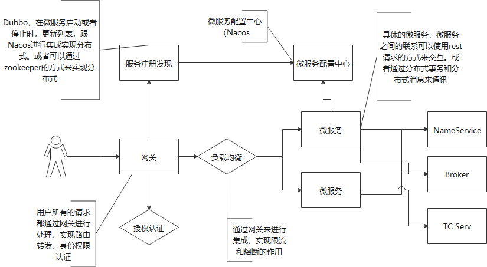
Spring Cloud的核心之Spring Boot
重新认识Spring Boot
核心思想为约定胜于配置
Spring IOC/DI
IoC(控制反转)：对象的创建不是由代码通过new来创建的，而是通过Spring容器来进行控制的，程序只是使用容器来控制程序的运行
DI(依赖注入)：IoC容器在运行期间，动态地把某些依赖关系注入组件中，来创建一个容器出来。
以前所有的配置都是基于XML配置文件来运行的，Spring Boot的出现只是用来简化Spring应用开发
约定优于配置是一种软件设计模式，目的不是在于减少依赖，但是，而是在于减少配置数量或者降低理解难度，从而来提高开发效率。理由如下：运用Spring Boot容器的方式，实际上依赖的数量和复杂度并没有变化，因为外界的依赖就是有这么多，软件本身是根据实物来抽象出来的，所以软件抽象出来的依赖并没有发生变化，通过Spring 容器的方式只是将依赖集中化管理而已）。设计模式的本身也不能够减少抽象出来的实体的依赖，只是对这些依赖做抽象（比如，抽象成聚合，组合，实现等关系，给予不同的依赖不同的涵义，帮助软件的设计和管理）
Spring Boot自动装配的原理
自动装配的核心是扫描约定目录下的文件进行解析，解析完成之后得到的Configuration配置类通过ImportSelector进行导入。从而完成Bean的自动装配过程。
扫描 -> Bean,Configuration -> 自动装配（解决相互依赖） -> 容器（获取Bean） -> 功能运行
微服务架构下的服务治理
服务与服务之间的远程通讯是分布式架构最基本的组成部分，传统意义上的远程通讯，更多的时候是解决信息孤岛及数据互联互通问题，它更多关注的是数据的共享。微服务架构思想的落地，更多注重的是服务与服务之间的解耦。
Apache Dubbo
Apache Dubbo是一个统一的服务治理框架，对服务进行统一/有效的管控，从而保证服务的高效/健康运行。提供了服务治理功能，比如服务注册，监控，路由和容错。核心功能就是监控和服务注册发现。
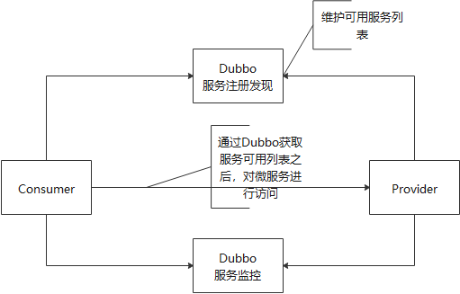
Dubbo主要实现点对点的形式来实现服务的通讯（可以把Dubbo看成一种通讯协议），Dubbo可以很好地集成注册中心来实现服务地址的统一管理。比如使用zookeeper来进行管理。
ZooKeeper
ZooKeeper介绍
ZooKeeper的数据是结构化存储的，并没有在物理上体现出文件和目录。ZooKeeper树中的每个节点被称为Znode，维护一个stat状态信息，其中包含数据变化的时间和版本，并且每个Znode可以设置一个value值。每个节点的数据都是允许读和写的.并且Znode的状态发生变化之后,会有事件进行通知.节点的类型如下:
- 持久化节点:节点的数据会被持久化到磁盘中
- 临时节点:节点的声明周期和创建该节点的客户端的生命周期保持一致,一旦该客户端的会话结束,则该客户端所创建的临时节点会被自动创建(每个节点可以代表一个微服务的状态)
- 有序节点:在创建的节点后面会增加一个递增的序列,该序列在同一级父节点之下是唯一的.
- 容器节点:当容器节点下的最后一个子节点被删除时,容器节点就会被自动删除
- TTL节点:针对持久化节点或持久化有序节点,可以设置一个存活时间,如果在存活时间之内,该节点没有任何修改并且没有任何子节点,它会被自动删除.
常用场景
- 分布式独占锁:使用临时节点,在同一个目录中进行创建,谁能够创建成功,谁就能够访问资源.获取独占锁之后,完成工作之后,临时节点进行删除.这个时候其他进程再通过相同的方式进行创建.
- Master选举:第一种方法,通过独占锁的方式来实现Master选举,谁能够创建临时节点的话,谁就是Master,其他的不能够创建成功的微服务都对该处做了订阅;第二个方式是通过临时有序节点的特性来实现,每个微服务分前后的方式构成了一个有序节点,每个节点都注册了对于前一个节点的订阅.如果前面的节点被删除的话,后面一个就成为Master节点.
Apache Dubbo集成ZK来实现服务注册
- 服务动态上下线感知:就是服务调用者要感知到服务提供者上下线的变化
- 负载均衡
实现原理
Dubbo服务启动时,会去ZooKeeper服务器上的/dubbo/com.gupaoedu.book.dubbo.IHelloService/providers目录下创建当前服务的URL,其中com.gupaoedu.book.dubbo.IHelloService是发布服务的接口全路径名称,providers表示服务提供者的类型,dubbo://ip:port表示该服务发布的协议及访问端口.其中URL是临时节点,如果微服务下线的话,节点就不存在了.
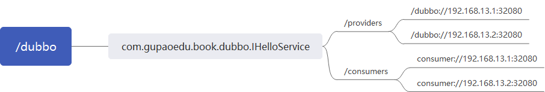
当Dubbo服务消费者启动时,会对/dubbo/com.gupaoedu.book.dubbo.IHelloService/providers节点下的子节点注册Watcher监听,感知服务提供方节点的上下线变化.服务消费者会在dubbo/com.gupaoedu.book.dubbo.IHelloService/consumers下写入自己的URL,这样做的目的是可以在监控平台上看到Dubbo服务正在被哪些服务调用.Dubbo服务的消费者通过获取providers下的服务,然后调用负载均衡算法(Sentitle)来计算出一个地址来进行远程访问(比如实现灰度发布)
dubbo在这里实现的功能就是注册发现服务,比如注册是在对应Znode(providers)中创建临时节点.发现服务是在对应Znode(consumers)中创建临时节点.ZooKeeper的粒度不是以微服务为单位,而是以服务提供者提供的接口为粒度.每个接口的下面有providers和consumers两个持久化节点.
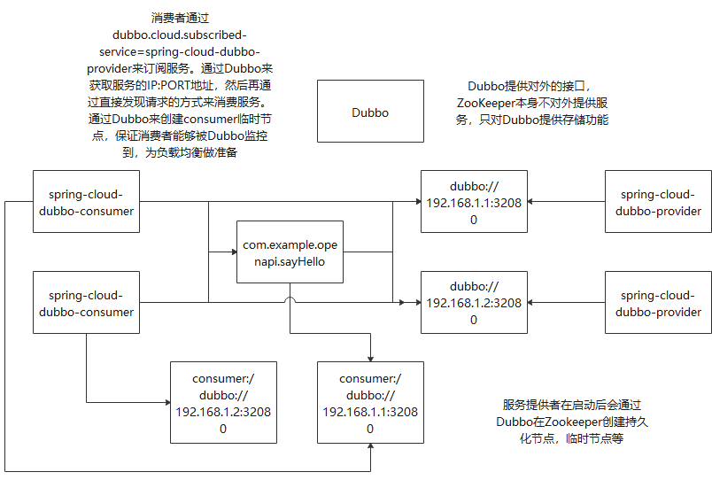
Dubbo高级应用
对于Dubbo的高级功能，目前有较多的三方件有替代功能。
- 集群容错：
- Failover Cluster:失败自动切换。当服务调用失败后，会切换到集群中的其他机器进行重试。
- Failfast Cluster：快速失败。当服务调用失败，立即报错
- Failsafe Cluster:失败安全，出现异常后，直接忽略异
- 负载均衡：目前Dubbo提供了4中负载均衡策略，默认是随机算法。
- 服务降级：把一些非必要的功能在流量较大的时间段暂时关闭。
服务注册与发现
Alibaba Nacos
Nacos致力于解决微服务中统一配置，服务注册与发现等问题。
- Nacos支持基于DNS和基于RPC的服务发现。服务提供者使用SDK/OpenAPI或者一个独立的Agent TODo注册Service后，服务消费者可以使用DNS或HTTP/API查找和发现服务。Nacos提供对服务的实时健康检查，阻止向不健康的主机或服务实例发送请求。
- 动态配置服务。动态配置服务可以以中心化，外部化和动态化的方式管理所有环境的应用配置和服务配置，可以使配置管理变得更加高效和敏捷。配置中心化管理实现无状态服务更加简单，让服务按需弹性扩展变得更容易。
API说明
Nacos提供了SDK及Open API的方式来完成服务注册与发现。
|
|
Nacos高可用部署
Nacos提供了类似于ZooKeeper的集群架构，包括一个Leader节点和多个Follow节点。和ZooKeeper不同的是，它的数据一致性算法采用的是Raft。
Nacos作为Spring Cloud Alibaba中服务注册与发现的核心组件，可以很好地帮助开发者将服务自动注册到Nacos服务端，并且能够动态感知和刷新某个服务实例的服务列表中。
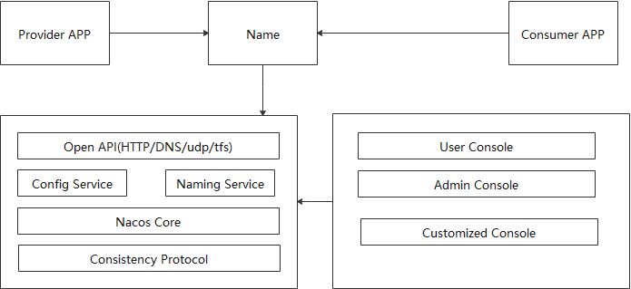
注册中心实现原理
- 服务实例在启动时注册到服务注册者，并在关闭时注销
- 服务消费者查询服务注册表，获得可用实例
- 服务注册中心需要调用服务实例的健康检查API来验证它是否能够处理请求。
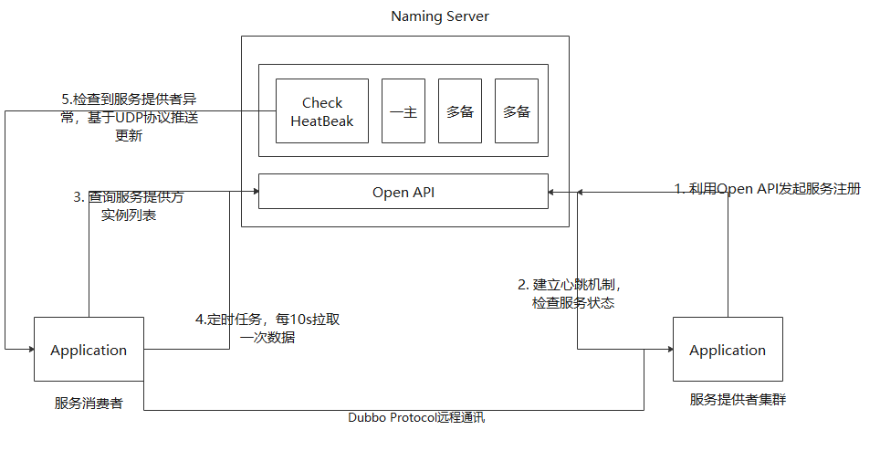
Dubbo在这里只是作为一个通讯协议。
Nacos Naming Service作为单独的微服务，能够提供注册中心的作用，并且自身能够实现集群算法统一。
Dubbo+Nacos Service与Dubbo+ZooKeeper的联系与区别：
- 共同点:Nacos Service和ZooKeeper都提供了分布式集群信息通讯的作用，保证了信息的分布式节点的一致性
- 不同点：Dubbo + Nacos Service的方式下，实际上是通过Nacos的Open API的方式来实现了服务的注册与发现。并且，Nacos自身能够记录Open API存储的信息，保证在多个节点中的一致性的问题。Dubbo在这里只是作为通讯协议的作用
- Dubbo + ZooKeeper时，Dubbo提供了服务的注册与发现的作用，Dubbo通过在分布式存储ZooKeeper中建立固定节点和临时节点的方式来实现服务的注册与发现，Dubbo在这里不仅仅提供了通讯协议的功能，还提供了服务的注册与发现的功能。而内部信息在多节点的一致性是通过ZooKeeper来进行保证的。
心跳机制：就是客户端通过schedule定时向服务端发送一个数据包，然后启动一个线程不断检查服务端的回应。如果在设定时间内没有收到服务端的回应，则认为服务器出现故障。Nacos服务端会根据客户端的心跳包不断更新服务的状态。（是一个双向过程）
Nacos实现统一配置管理
各个应用自己独立维护本地配置的方式有其局限性：
- 配置的动态更新。本地配置变化需要重启微服务才能够实现配置更新
- 配置集中化管理：在微服务中，微服务实例可能有上百个，如果配置属性发生变化的话，变更工作量是巨大
- 配置内容的安全性和权限。配置文件随着源代码统一提交到代码库中，容易造成生产环境配置信息的数据泄露
- 不同部署环境下配置的管理。
最基本的方法就是把各个应用系统中的某些配置放在一个第三方中间件上进行统一维护。然后，对于统一配置中心上的数据的变更需要推动到相应的服务节点实现动态更新。包括Config Server和Config Client.
Spring Cloud Alibaba Nacos Config
Nacos 实现在不同的环境中加载不同配置的能力，主要是通过文件名来进行加载。在Spring Cloud Alibaba Nacos Config中加载Nacos Config Server中的配置对，不仅加载了Data ID以${spring.application.name}.${file-extension:properties}为前缀的基础配置，还会加载Data ID为${spring.application.name}-${profile}.${file-extension:properties}的基础配置
bootstrap.properties
|
|
如上图所示，可以通过加载spring-cloud-nacos-config-sampl-prod.yaml文件来实现微服务配置文件加载
Nacos Config自定义Namespace和Group
Nacos Config都采用默认的Namespace:public和Group：DEFAULT_GROUP.其中Namespace用于解决多环境及多租户用户数据的隔离问题，比如根据指定环境创建不同的Namespace，实现多环境的隔离，或者在多用户的场景中，每个用户可以维护自己的Namespace，实现每个用户的配置数据和注册数据的隔离。而Group可以更加专注于业务层面的数据分组。
Namespace -> Group -> Data ID(通过Namespace-Group-DataID来获取到配置文件)
Nacos Config实现原理解析
提供接口
- 获取配置，从Nacos Config Server中读取配置
- 监听配置：订阅感兴趣的配置，当配置发生变化时可以收到一个事件
- 发布配置：将配置发布到Nacos Config Server
- 删除配置：删除配置中心的指定配置
配置的CRUD
如何能够实现Nacos Server的数据一致性：通过数据库来实现持久化
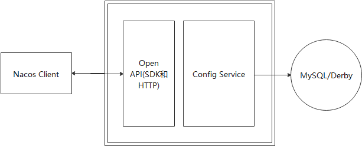
配置中心通过数据库来实现持久化，Config Service提供外部访问接口，来添加配置和删除配置等。Nacos Client是作为一个微服务实例，能够拉取最新的配置。
动态监听之Pull Or Push
- Pull：客户端从服务端主动拉取数据，客户端需要定时从服务端拉取一次数据，由于定时任务会存在一定的时间间隔，所以不能够实现实时更新。并且，如果没有服务端配置长时间不更新的情况下，会造成无效的Pull
- Push：服务端主动把数据推送到客户端中，能够实现实时更新。但是呢，服务端需要维护与客户端的长连接，如果客户端的数量较多的话，需要耗费大量的内存资源来保存每个连接，并且检测连接的有效性，还需要心跳机制来维护每个连接的状态。对于消息的发送的复杂性集中与服务端中，由服务端来控制连接的存在，以及如果事件更新较快的话，可能会存在挤压。
Nacos使用的是长轮询机制。所谓长轮询机制的好处在于：客户端自动拉取数据，由客户端来控制配置的更新，不需要服务器来维护与客户端的链接，能够减少服务端的资源使用量。并且，由于长轮询时间比较长，能够减少客户端发起请求的无效资源消耗量。另外，如果在长轮询过程中，出现事件更新的话，能够直接返回请求，来达到实时推送的作用，从而达到PUSH的操作。也就是说长轮询能够实现主动拉取（PULL）和实时推送（PUSH）
长轮询机制
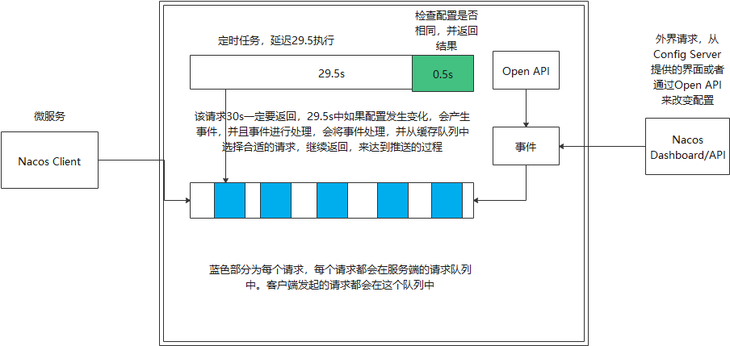
长轮询的步骤如下：
- 客户端发起请求
- 请求被客户端处理，检查配置是否发生更新，如果配置已经发生更新的话，请求直接返回
- 如果请求到达时，请求没有发生变化，该请求进入到缓存队列中。如果在长轮询的过程中（比如29.5s中），有配置发生变化的话，通过遍历缓存中的对象（或者通过Map的方式来实现定点快速更新的方式），来将该请求进行返回
- 如果在长轮询的过程中（比如29.5s后）配置依然没有发生变化的，那么请求在定时任务的作用下，检查配置是否返回变化，并且返回最终的结果。
优化点:这样的话，对于每个配置需要进行两次配置检查，第一次为处理PULL请求，第二次为定时任务检查配置是否更新。可以减少第二次配置检查，将这一此配置更新检查顺延到下一次的长轮询请求，来减少空闲请求占用的资源。也就是优化第4步，让其不做检查，直接返回结果。
基于Sentinel的微服务限流及熔断
服务器处理请求的能力是有限的。有限的原因是在目前使用阻塞式的服务器（如tomcat）等，服务器处理每个请求都需要新建新的线程进行处理，消耗大量的资源。所以需要一定的系统保护策略：比如服务降级，限流和熔断等。
服务限流的作用及实现
限流的目的是通过限制并发访问数或者限制一个时间窗口内允许处理的请求数量来保护系统，一旦达到限制数量则对当前请求则对当前请求进行处理采用对应的拒绝策略，比如跳转到错误页面拒绝请求，进行排队系统，降级等。从本质上说，限流的主要作用是损失一部分用户的可用性，为大部分用户提供稳定可靠的服务。
计数器算法
计数器算法：在指定周期内累加访问次数，当访问次数达到设定的阈值时，触发限流策略，当进入下一个时间周期内进行访问次数的清零。
缺点:无法解决瞬间值，比如在极短时间接收到很多请求，但是又不超过该时间周期允许的最大请求数，会系统造成危险。
滑动窗口算法
在固定窗口中分割出多个小时窗口，分别在每个小时间窗口记录访问次数，然后根据时间将窗口往前移动并删除过期的小时间窗口。最终只需要滑动窗口范围内的所有小时间窗口总的计算即可。该算法可以保证请求的速度平均。（TCP窗口就是该算法）
令牌桶限流算法
令牌桶是网络流量整形和速率限制中最常使用的一种算法。对于每个请求，都需要从令牌桶中获得一个令牌，如果没有获得令牌，则需要触发限流策略。由于令牌桶有固定的大小，当请求速度小于令牌生成速度时，令牌桶会被填满。所以令牌桶能够处理突发流量。
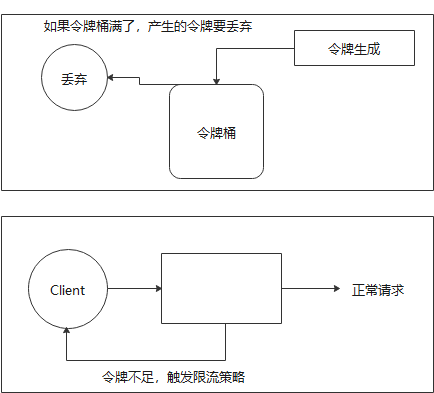
漏桶限流算法
主要的作用是控制数据流入网络的速度，平滑网络上的突发流量。在漏桶算法内部同样维护一个容器，不管上面的水流速度多块，漏桶水滴的流出速度始终保持不变。实际上消息中间件就使用漏桶限流的思想。不管生产者的请求量有多大，消息的处理能力取决于消费者。
服务熔断与降级
服务熔断是指当某个服务提供者无法正常为服务调用者提供服务时，比如请求超时，服务异常时，为了防止整个系统出现雪崩效应，暂时将出现故障的接口隔离出来，断绝与外部接口的联系，当触发熔断之后，后续一段时间内该服务调用者的请求都会直接失败，直到目标服务恢复正常。一般通过平均响应时间，异常比例，异常数量来进行控制。
分布式限流框架Sentinel
该框架由两部分组成
- 核心库（Java客户端）：能够运行在所有Java运行时环境
- 控制台（DashBoard)：基于Spring Boot开发，服务器端，用来展示机器发现，健康情况管理，监控，规则管理和推送的功能
主要由三个要素：
- 定义资源
- 定义限流规则
- 检验规则是否生效
限流规则
- 基于并发数和QPS（吞吐量）的流量控制
- QPS流量控制行为（默认为直接拒绝，冷启动，匀速排队，冷启动+匀速排队）
- 调用关系流程策略（根据调用方限流，调用链路入口，具有关系的资源流量控制）
使用方式
可以通过Sentinel DashBoard来配置对每个URL的规则的定制
定义资源需要用户通过注解的方式进行定义。可以通过FlowRuleManager.loadRules()手动加载流控规则，也可以通过Sentinel Dashboard上针对资源动态创建流控规则。
Sentinel架构
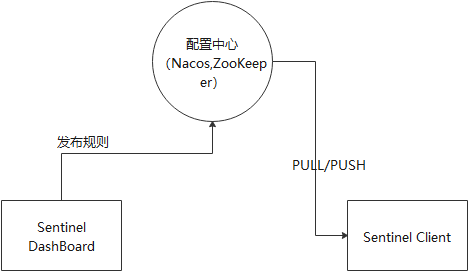
Sentinel使用责任链模式，来对访问资源的请求进行保护，保证对每个请求都遍历每个规则进行验证。
分布式事务
概念：ACID
原子性（Atomicity):事务必须是原子工作单元，不可继续分割，要么全部成功，要不全部失败
一致性（Consistency):事务完成时，所有的数据都必须保持一致
隔离性（Isolation):由并发事务所做的修改必须与任何并发事务所做的修改隔离
持久性（Durability):事务执行完成之后，它对系统的影响是永久性的。
分布式事务是指事务的参与者，支持事务的服务器，资源服务器及事务管理器分别位于分布式系统的不同节点上。
分布式事务存在的意义：在单体应用中，由于都是在Java中进行运行，可以通过Java锁等模式来控制原子特性。但是在不同进程或者不同节点上，缺少统一的对进程的管理，很难保证原子性。并且分布式系统，基于解耦的要求，数据拆分比较具体，存储资源的分布性。
分布式事务问题的理论模型
X/OPEN分布式事务模型（二阶段提交）（2PC）
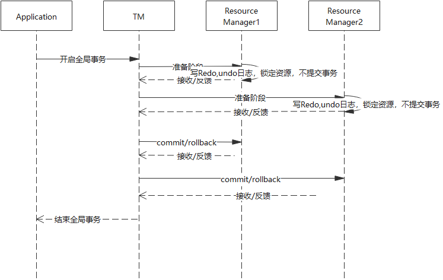
缺点：资源在经过二段式任务时，资源一致被锁定。并且，如果在二段式任务的过程中，如果TM进程消失时，会出现资源永远被锁住的情况，因为资源锁住是没有超时时间的。并且，所有参与者（RM）都是事务阻塞性，对于任何一个指令，都必须要有明确的响应才能够执行下一步，否则处于阻塞状态，占用的资源一直被占用。
三段式提交
在二段式提交的基础上，增加了一个询问阶段（TM向RM发送事务执行操作，询问是否可以完成指令，参与者只需要回答是或者不是即可，不需要做真实的操作）
相对于二段式提交，增加了超时机制，可以防止资源因为TM失败而被永久锁定），但是依然会出现脑裂情况，资源被占用较大的情况）
Zookeeper集群中的数据一致性，用到优化版的二阶段提交协议，优化的地方在于它不需要所有参与者在第一阶段返回成功才能提交事务，而是利用少数服务多数的投票机制来完成数据的提交或者回滚
CAP定理和BASE理论
CAP定理：在分布式系统中不可能同时满足一致性，可用性，分区容错性。
- C:一致性，数据在多个副本中要保持一致
- A：可用性，系统对外提供的服务必须一直处于可用状态
- P：在分布式系统中遇到任何网络分区故障，系统仍然能够正常对外提供服务
AP：放弃强一致性，实现最终的一致性，这是很多互联网公司解决分布式数据一致性问题的主要选择
CP：放弃高可用性，实现强一致性。前面提到的二阶段提交和三阶段提交都是采用这种方案，可能会导致用户完成一个操作会等待很长时间。
BASE理论：通过牺牲数据的强一致性来获得高可用性：
- Basically Available:(基本可用)：分布式系统在出现故障时，这个状态不影响系统的可用性，保证核心功能的可用
- Soft State(软状态)：允许系统中的数据存在中间状态，这个状态不影响系统的可用性，也就是允许系统中不同节点的数据副本之间的同步存在延迟
- Eventually Consisteng(最终一致性)：中间状态的数据在经过一段时间之后，会达到最终的数据一致性。
也就是说，并不是要求数据的强一致性，在任何时刻都是一致性的，而是允许数据在一段时间内是不一致的，但是最终要是一致的。也就是说事务最终一定要完成，但是事务处理的过程中，数据允许不一致。
分布式事务问题的常见解决方案
TCC补偿性方案
是一种比较成熟的分布式数据一致性解决方案，分为三个步骤：
- Try:对数据的校验或者资源的预留
- Confirm:确认真正执行的任务，只操作Try阶段预留的资源
- Cancel:取消执行，释放Try阶段预留的资源
实际上是一个二段式提交的模型，只是在二段式提交的基础上，增加了失败重试机制来补偿失败场景。TCC事务框架会记录一些分布式事务的操作日志，保存分布式事务运行的各个阶段和状态，TCC事务协调器会根据操作日志进行重试，以达到数据的最终一致性。
基于可靠性信息的最终一致性方案
基于可靠性信息传递来保证数据的一致性
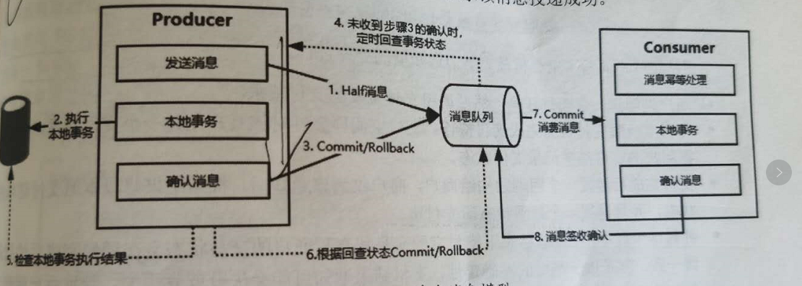3
分布式事务框架Seata
AT模式
AT模式是Seata最主推的分布式事务解决方案，基于XA进行演进。
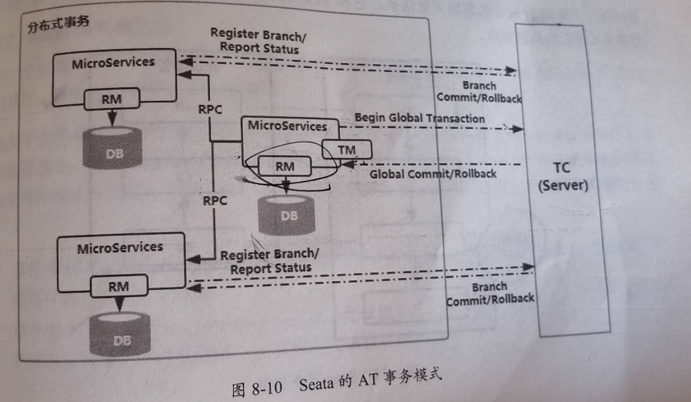
该模式实现分布式事务的中心化管理，保证了微服务只跟中心程序进行联系，而不用自己控制整个XA事务，从之前的网状式变成中心化管理
TC：Seata的服务器独立部署（通过独立部署做中心化管理）
TM:事务管理器
RM：资源管理器
- TM向TC注册全局事务，并生成全局唯一的XID
- RM向TC注册分支事务，并将其纳入该XID对应的全局事务范围
- RM向TC汇报资源的准备状态
- TC汇总所有事务参与者的执行状态，决定分布式事务是全部回滚还是提交
- TC通知所有RM提交和回滚事务
AT模式实现原理
整体机制也是一个改进版的两阶段提交协议：
- 第一阶段：业务数据和回滚日志记录在同一个本地事务中提交，释放本地锁和连接资源
- 第二阶段：提交异步化：非常快速地完成。回滚通过第一阶段的回滚日志进行反向补偿。
第一阶段：
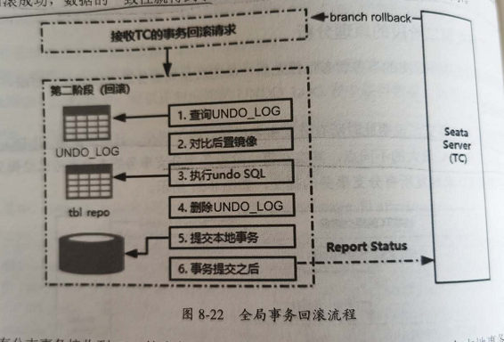
第二阶段：
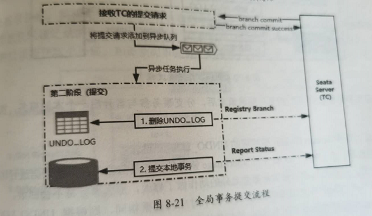
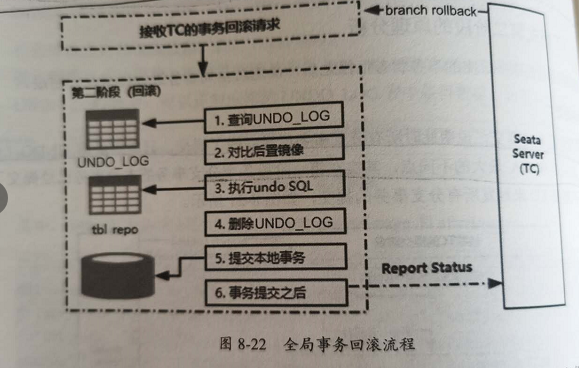
该模式不一定能够成功：特别是对于较复杂的场景，比如数据库中有触发器的模式下，有可能会失败。